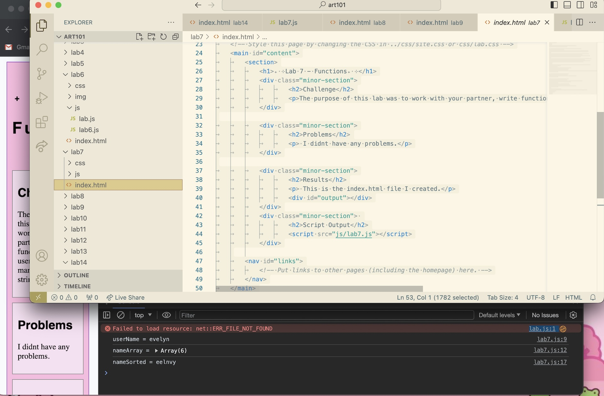
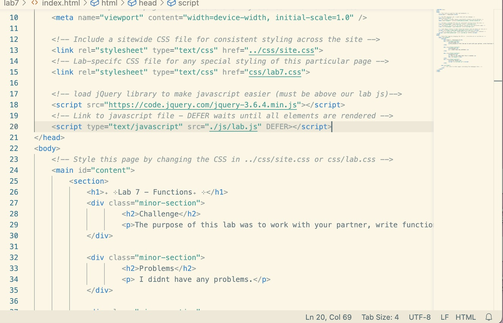
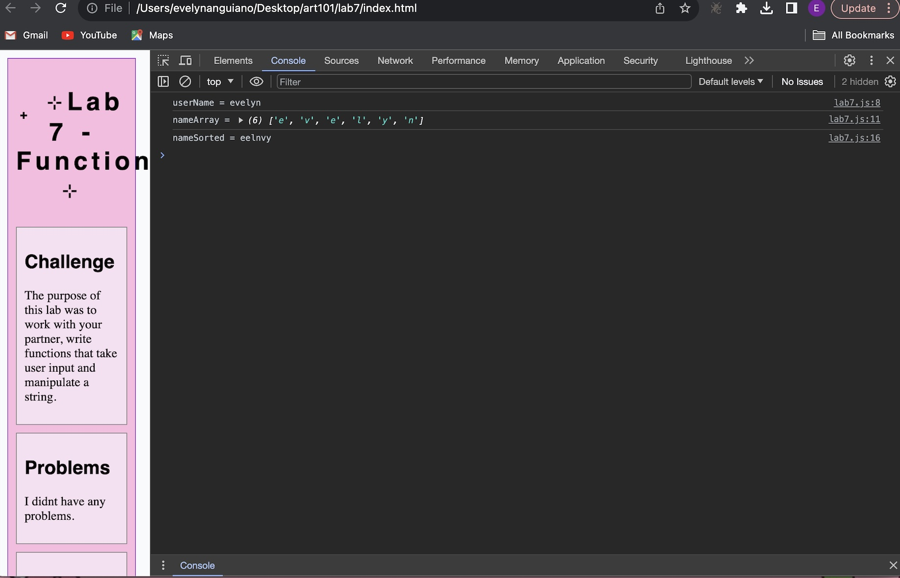

₊ ⊹Lab 14 - Debugging Tools & Strategies₊ ⊹
Challenge
The purpose of this lab was to work with a partner and use your debugging knowledge to fix old assignments.
Problems
I didnt have any problems.
Results
This is the index.html file I created.
Debugging
For the most part, my labs' javascript had no significant errors. However, I saw that in a few of my labs, the console showed the message "Failed to load resource: net::ERR_FILE_NOT_FOUND". I noticed that my JavaScript link was appearing twice in my HTML. The link including the lab number was one, and the other which was included in the head said lab.js. It said error since I had not written any javascript in lab.js. However, after I deleted it, my console showed no issues.
  